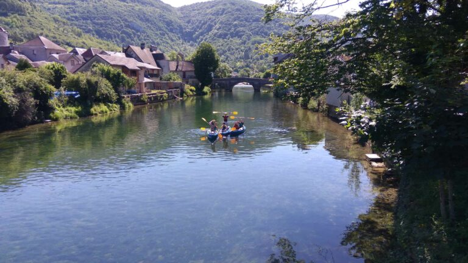
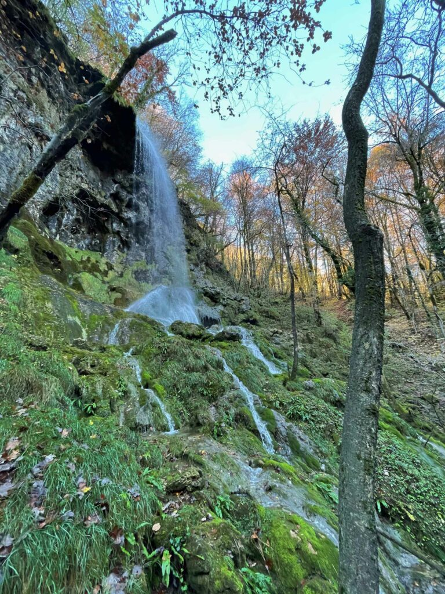
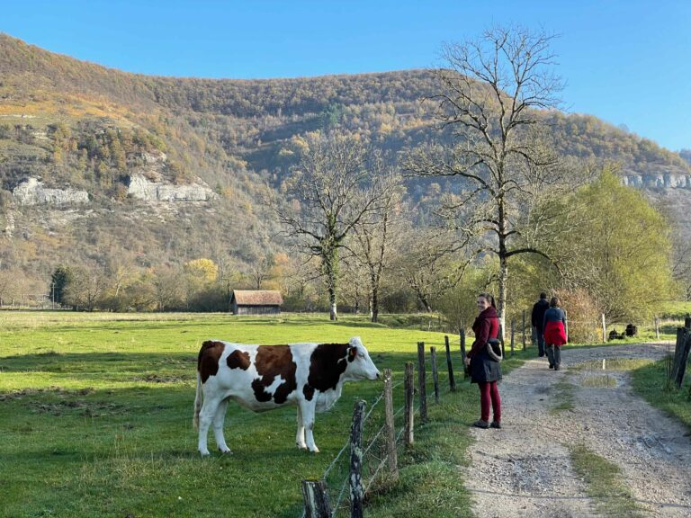
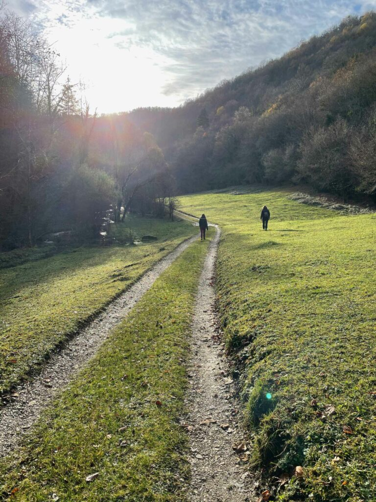
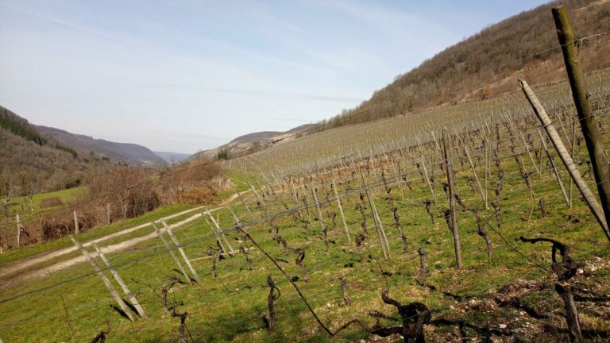
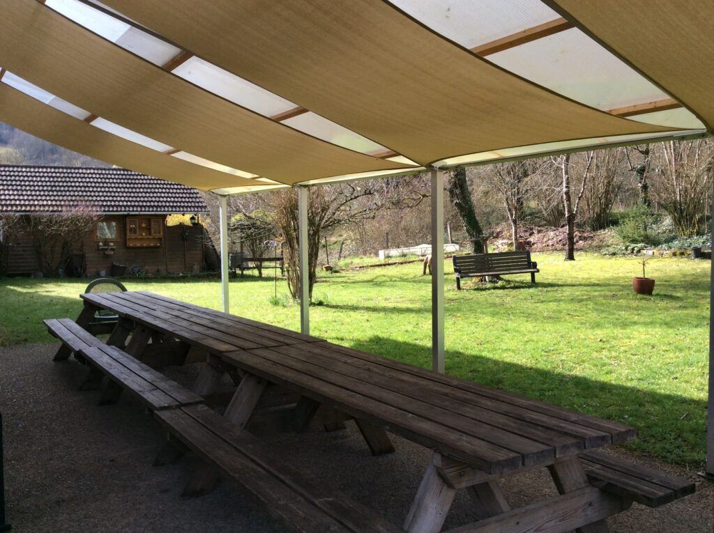
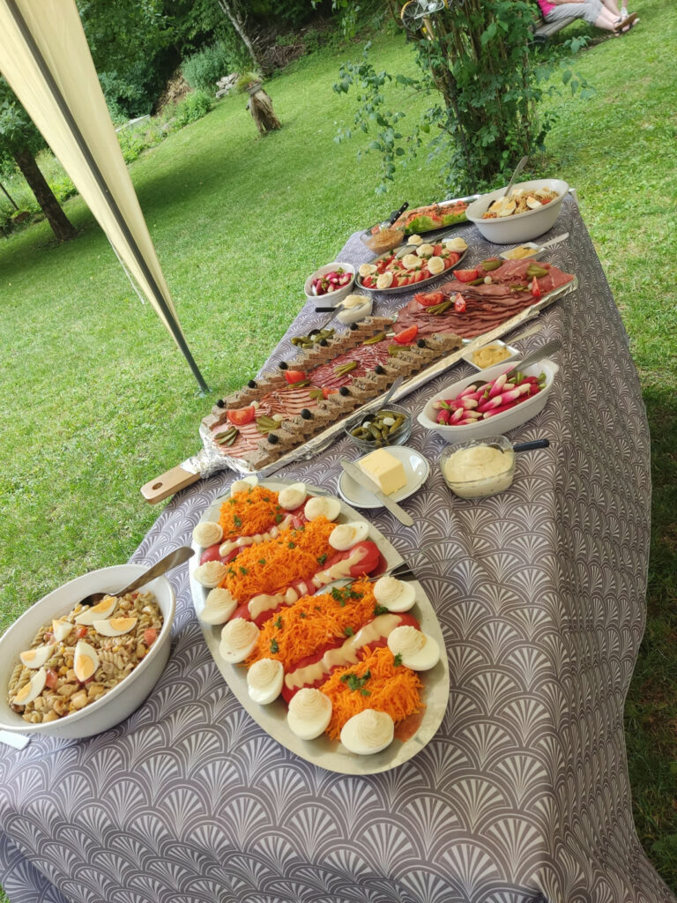

Le repère des motards, randonneurs et pêcheurs dans le Doubs : votre prochain hébergement
Un hébergement labélisé dans le Doubs pour vous accueillir toute l'année
Chez Bénédicte et Christian, entre rivières, nature et sentiers de randonnées, un endroit riche en activités nature au cœur du massif du Jura.





Un lieu reposant pour votre séjour
Convivialité et confort sont les deux points que nous souhaitons vous offrir de la Tuffière, votre Gîte de France dans le Doubs. À l'orée du village de Vuillafans, une bâtisse au milieu d'un grand parc arboré vous accueille pour une halte ou un séjour, ou simplement un anniversaire, un repas de famille.
Le gîte est situé dans un endroit tranquille à proximité du village, à 200m de la rivière, sur des sentiers de randonnées. Vous pourrez apprécier le calme de la terrasse, profiter du terrain de boules et du terrain de volley.
Ce gîte en Franche-Comté peut accueillir jusqu'à 35 personnes en chambres doubles ou multiples avec salle de bains et toilettes.

Hébergements motards, randonneurs et pêcheurs
Nous sommes labellisés hébergement pêche, Relais St Pierre et Motard bienvenue ! Pensez à réserver pour vos sorties pêche … Nos amis les motards sont aussi les bienvenus à La Tuffière.
Gîtes de France
Hébergement labellisé Gîtes de France, gage de qualité et d'authenticité.
Motard Bienvenue
Accueil adapté pour les motards de passage ou en séjour.
Label Pêche
Relais St Pierre — hébergement labellisé pêche au bord de la Loue.

Partage et convivialité
Le partage et l'échange sont primordiaux à la Tuffière. Bénédicte et Christian sont toujours présents pour vous aider à constituer votre séjour et vous apporter des compléments pour mieux connaître et apprécier notre région.
Le soir, vous pourrez vous désaltérer sur la terrasse et déguster une cuisine saine et régionale à partir de produits locaux.
Découvrir la table d'hôte"Un endroit riche en activités nature, un bon moyen pour faire le plein d'oxygène"
Avis de nos hôtes
4.8/5 sur Google
Venez sans plus attendre découvrir notre gîte
Un endroit riche en activités nature, un bon moyen pour faire le plein d'oxygène.